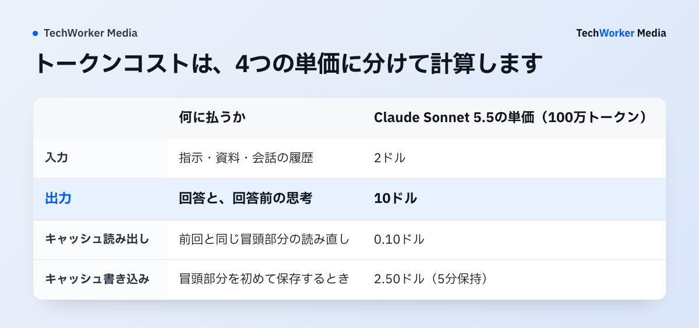
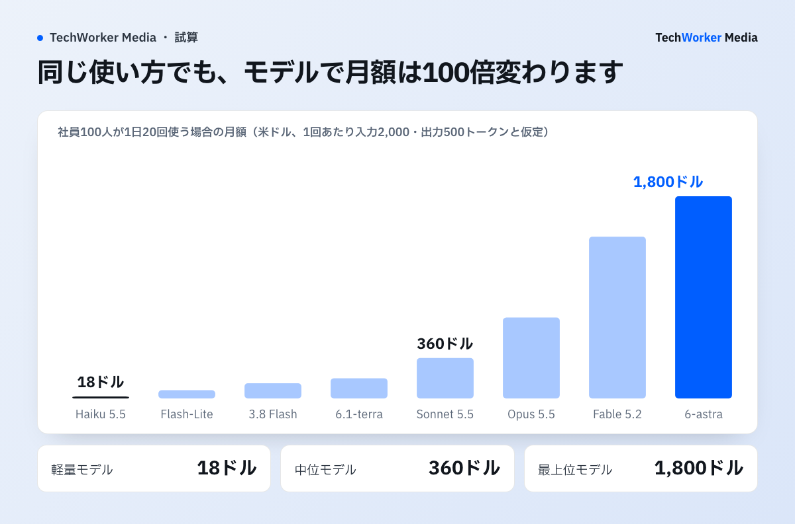

トークンコストとは、生成AIが処理した文字の量（トークン数）に応じて払う利用料です。計算式は「入力トークン数×入力単価＋出力トークン数×出力単価」です。単価は100万トークンあたりの米ドルで示されます。
- 単価の目安：3社の中位モデル（Claude Sonnet 5.5、gpt-6.1-sol、Gemini 4 Argon）は、入力2ドル・出力10ドルで並んでいます。
- 月額の目安：社員100人が1日20回使うと、中位モデルで月360ドル（約5.8万円）です。1回あたり入力2,000・出力500トークンと仮定した試算です。
- 差が出る所：同じ使い方でも、軽量モデルなら月18ドル、最上位モデルなら月1,800ドルです。
単価はAnthropic・OpenAI・Googleの公式料金ページを2026年11月11日に確認しました。この記事はAPIを従量で使うときの計算方法と見積もりを扱います。席ごとの定額契約はClaudeの法人契約と料金で説明しています。
トークンコストとは何ですか？
生成AIのAPIを使ったときに、処理したトークン数に単価を掛けて請求される利用料です。
原文“MTok: Million tokens. $5 / MTok is $5 for every million tokens.”
日本語訳MTokは100万トークンのことです。「$5 / MTok」は100万トークンごとに5ドルという意味です。
トークンは、AIが文章を読み書きするときの最小の単位です。料金表の「$2 / MTok」は100万トークンを処理すると2ドルかかるという意味です。3社とも、この「100万トークンあたりの米ドル」で単価を示しています。
1トークンが何文字にあたるかは、モデルごとに違います。Anthropicの料金ページによると、Claude Opus 4.7以降のモデルは新しいトークナイザー（文章をトークンに分ける仕組み）を使い、同じ文章でもトークン数が約30%多くなります。見積もりには文字数からの換算を使わず、APIの応答に入っている利用量（usage）の実測値を使います。

トークンコストはどう計算しますか？
入力・出力・キャッシュ読み出し・キャッシュ書き込みの4つに分け、それぞれのトークン数に単価を掛けて足します。
- 入力：AIに送る指示、添付した資料、それまでの会話の履歴です。
- 出力：AIが書く回答です。回答の前にAIが行う思考（推論）のトークンも、出力として課金されます。
- キャッシュ読み出し：前回と同じ冒頭部分を読み直すときの入力です。通常の入力より安い単価になります。
- キャッシュ書き込み：冒頭部分を初めて保存するときの入力です。Anthropicでは通常の入力の1.25倍（5分保持）か2倍（1時間保持）です。
1回の質問で計算してみます。Claude Sonnet 5.5（入力2ドル・出力10ドル）に、入力2,000トークンを送り、出力500トークンが返ってきた場合です。
入力：2,000 ÷ 1,000,000 × 2ドル ＝ 0.004ドル
出力：500 ÷ 1,000,000 × 10ドル ＝ 0.005ドル
合計：0.009ドル（1ドル160円で約1.4円）
出力は入力の4分の1の量ですが、金額は出力のほうが大きくなります。この記事の単価表では、ほとんどのモデルで出力の単価が入力の5倍です。
円への換算はこの記事を通して1ドル160円で計算しています。2026年11月10日の相場（1ドル約158.6円）を切りのよい値に丸めた仮のレートです。実際の請求は支払い時のレートで決まります。
主要モデルのトークン単価はいくらですか？
中位モデルは3社とも入力2ドル・出力10ドルで、軽量モデルは入力0.10ドルから、最上位モデルは入力10ドルまであります。
単位は米ドルで、100万トークンあたりの標準料金です。表が画面に収まらない場合は、横にスクロールできます。
| 提供元 | モデル（公式の表記） | 入力 | キャッシュ読み出し | 出力 |
|---|---|---|---|---|
| Anthropic | Claude Fable 5.2 | 8ドル | 0.20ドル | 40ドル |
| Anthropic | Claude Opus 5.5 | 4ドル | 0.20ドル | 20ドル |
| Anthropic | Claude Sonnet 5.5 | 2ドル | 0.10ドル | 10ドル |
| Anthropic | Claude Haiku 5.5 | 0.10ドル | 0.01ドル | 0.50ドル |
| OpenAI | gpt-6-astra | 10ドル | 1.00ドル | 50ドル |
| OpenAI | gpt-6.1-sol | 2ドル | 0.10ドル | 10ドル |
| OpenAI | gpt-6.1-terra | 1ドル | 0.05ドル | 5ドル |
| OpenAI | gpt-6-luna | 0.10ドル | 0.01ドル | 0.50ドル |
| Gemini 4 Carbon | 2ドル ※ | 0.10ドル ※ | 10ドル ※ | |
| Gemini 4 Argon | 2ドル ※ | 0.10ドル ※ | 10ドル ※ | |
| Gemini 3.8 Flash | 0.75ドル ※ | 0.075ドル ※ | 3.75ドル ※ | |
| Gemini 3.5 Flash-Lite | 0.30ドル | 0.03ドル | 2.50ドル |
※ 値上げの日付が料金表に書いてあるモデルです。Gemini 4 CarbonとGemini 4 Argonは2026年12月1日から入力4ドル・キャッシュ読み出し0.20ドル・出力20ドル、Gemini 3.8 Flashは2027年1月1日から入力1.50ドル・キャッシュ読み出し0.15ドル・出力7.50ドルになります。
出典：Anthropic「Pricing」、OpenAI「API Pricing」、Google「Gemini API pricing」（いずれも2026年11月11日確認）。OpenAIのモデルは料金ページに載っているモデルIDで表記しています。
この表を読むときの注意は4つあります。
- Googleは値上げの日付が料金表に書いてあります。Gemini 4 CarbonとGemini 4 Argonは2026年12月1日から、Gemini 3.8 Flashは2027年1月1日から、単価が2倍になります。年額の見積もりには値上げ後の単価を使います。
- 入力が長いと単価が上がるモデルがあります。Claude Haiku 5.5は、プロンプトが10万トークンを超えると入力0.50ドル・出力2.50ドルです。OpenAIの上の4モデルは、入力が27.2万トークンを超えると長文向けの料金になります（gpt-6.1-solは入力4ドル・出力15ドル）。
- まとめて処理すると半額です。結果をすぐに受け取らなくてよい処理は、3社ともBatch API（一括処理）で入力・出力が50%引きになります。
- 出力の単価には思考の分が含まれます。Googleの料金表は出力の欄を「思考トークンを含む出力料金」と書いています。AnthropicとOpenAIも、思考（推論）のトークンを出力として数えます。
この単価表と稟議書の雛形は、下の枠から受け取れます。
月額はどう見積もりますか？
「人数×1日の回数×営業日数」で月の回数を出し、1回あたりのトークン数と単価を掛けます。
社員100人が1日20回使う場合で計算します。1回あたりのトークン数は入力2,000・出力500と仮定します。自社の数字が分かったら、この2つを実測値に置き換えてください。
月の回数：100人 × 20回 × 20営業日 ＝ 4万回
月の入力：4万回 × 2,000トークン ＝ 8,000万トークン
月の出力：4万回 × 500トークン ＝ 2,000万トークン
中位モデル（入力2ドル・出力10ドル）：80 × 2ドル ＋ 20 × 10ドル ＝ 360ドル
月360ドルは1ドル160円で5万7,600円です。1人あたりでは月3.6ドル（576円）になります。同じ使い方を、ほかのモデルの単価で計算すると次のとおりです。

| モデル | 入力の分 | 出力の分 | 月額 | 円換算（1ドル160円） |
|---|---|---|---|---|
| Claude Haiku 5.5／gpt-6-luna | 8ドル | 10ドル | 18ドル | 2,880円 |
| Gemini 3.5 Flash-Lite | 24ドル | 50ドル | 74ドル | 1万1,840円 |
| Gemini 3.8 Flash | 60ドル | 75ドル | 135ドル | 2万1,600円 |
| gpt-6.1-terra | 80ドル | 100ドル | 180ドル | 2万8,800円 |
| Claude Sonnet 5.5／gpt-6.1-sol／Gemini 4 Argon（11月30日まで） | 160ドル | 200ドル | 360ドル | 5万7,600円 |
| Claude Opus 5.5／Gemini 4 Argon・Carbon（12月1日から） | 320ドル | 400ドル | 720ドル | 11万5,200円 |
| Claude Fable 5.2 | 640ドル | 800ドル | 1,440ドル | 23万400円 |
| gpt-6-astra | 800ドル | 1,000ドル | 1,800ドル | 28万8,000円 |
月4万回、1回あたり入力2,000・出力500トークンと仮定した試算。キャッシュとBatch APIの割引は入れていません。
いちばん安いモデルといちばん高いモデルで、月額は100倍違います。モデルは仕事の難しさで分けて選びます。決まった形式の抜き出しや分類は軽量モデル、ふだんの文書作成や要約は中位モデル、長い資料の突き合わせや失敗の影響が大きい判断は上位モデル、という分け方です。分け方の考え方はトークンマネジメントとはで説明しています。
なぜ実際の請求は見積もりより高くなるのですか？
会話の履歴が毎回入力として送り直されること、思考のトークンが出力に数えられることが主な理由です。
- 会話が続くほど入力が増えます。APIは前の会話を覚えていないので、やり取りのたびに履歴を全部送り直します。質問500トークン・回答500トークンのやり取りを10往復すると、入力の合計は5万トークンです。質問そのものは合計5,000トークンなので、10倍の入力に課金されます。
- 画面に見えない思考にも課金されます。Anthropicの資料は、請求される出力トークン数と応答に見えるトークン数は一致しないと説明しています。難しい質問ほど、思考の分で出力が増えます。
- 資料を添付すると入力が一気に増えます。長い資料を毎回送ると、入力が長文向けの料金に切り替わるモデルもあります。
- ツールの利用料は別です。Anthropicでは、ウェブ検索などサーバー側のツールに、トークンとは別の利用料がかかります。
- 単価と為替が動きます。Googleの値上げのように単価が2倍になる例があり、請求はドル建てです。
見積もりの段階では、1回あたりのトークン数を仮の値で置くしかありません。2〜4週間の試験運用で実測し、仮の値を置き換えてから年額を出します。
トークンコストはどう下げますか？
モデルを仕事で分ける、出力を短くする、キャッシュを使う、急がない処理をBatch APIに回す、の4つです。
- モデルを仕事で分けます。上の試算では、中位モデルを軽量モデルに替えると月360ドルが18ドルになります。品質が足りる仕事だけを軽いモデルに移します。
- 出力を短くします。上の試算では、月額360ドルのうち200ドルが出力です。回答の長さを半分の250トークンにすると、月額は260ドルになります。
- キャッシュを使います。社内ルールやマニュアルなど、毎回同じ冒頭部分を送る使い方に向いています。入力2,000トークンのうち1,500トークンが共通なら、Claude Sonnet 5.5の月額は360ドルから246ドルになります（下の計算）。
- 急がない処理をBatch APIに回します。夜間の集計や大量の分類は、3社とも50%引きで処理できます。
キャッシュを使った場合（Claude Sonnet 5.5、読み出し0.10ドル）
共通部分：4万回 × 1,500トークン ＝ 6,000万トークン × 0.10ドル ＝ 6ドル
残りの入力：4万回 × 500トークン ＝ 2,000万トークン × 2ドル ＝ 40ドル
出力：200ドル
合計：246ドル（キャッシュの書き込み分は別にかかります）
キャッシュの読み出し単価は通常の入力に対して次の割合です。Claude Fable 5.2は2.5%、Claude Opus 5.5とClaude Sonnet 5.5は5%、Claude Haiku 5.5は10%です。gpt-6.1-solとGemini 4 Argonは5%です。
下げる順番と、作業ごとに費用と品質を記録する方法は、トークンマネジメントとはに記入例とCSVのひな型があります。費用だけが下がって手戻りが増えた変更は、採用しません。
APIの利用はどんな手順で始めますか？
用途を決め、APIキーを用途ごとに分け、支出の上限を置いてから、試験運用で実測します。
- 誰が何に使うかを決めます。社内のチャット画面に組み込むのか、夜間の自動処理に使うのかで、回数とトークン数が変わります。
- 各社の管理画面で組織のアカウントを作ります。APIキーは用途ごとに分けます。分けておくと、どの用途でいくら使ったかを後から追えます。
- 月の支出の上限を置きます。Anthropicでは、ワークスペース単位で支出上限を設定できます。ほかの2社については、上限と通知の設定方法を契約前に確かめます。
- 2〜4週間の試験運用で実測します。1回あたりの入力・出力・キャッシュのトークン数を、用途ごとに記録します。
- 実測値で年額を出します。「1回あたりの実測額×月の回数×12カ月」です。値上げ後の単価と、為替の幅も書き添えます。
稟議では何を聞かれますか？
月額の上限、席ごとの定額契約との違い、値上げと為替への備え、入力したデータの扱いの4つです。
- 月にいくらまでかかりますか。従量課金は使った分だけ増えます。支出の上限額と、上限に達したときの扱い（止めるか、承認して増やすか）を書きます。
- 定額の席契約とどちらが安いですか。上の試算では、API従量は1人あたり月3.6ドルです。Claude TeamのStandardシートは1人月20ドル（年払い、2026年11月9日確認）です。ただし席契約には、チャット画面、管理機能、利用枠が含まれます。APIでは、社員が使う画面と管理の仕組みを自社で用意します。単価だけでは比べられません。
- 値上げされたらどうなりますか。Gemini 4 Argonを選ぶと、上の試算は12月1日から月360ドルが720ドルになります。稟議には値上げ後の額を載せます。
- 入力したデータは学習に使われますか。Googleの料金表は、無料枠では入力した内容が製品の改善に使われると書いています。業務のデータは有料枠で扱い、各社の利用規約を契約前に確かめます。
席契約の選び方と稟議の手順はClaudeの法人契約と料金で、Gemini 4 Argonを業務で試す範囲はGemini 4 Argonの業務試用で扱っています。
よくある失敗には、どんなものがありますか？
入力の単価だけで比べること、上限を置かずに始めること、値上げ前の単価で年額を出すことの3つが多い失敗です。
- 入力の単価だけでモデルを比べる。出力の単価は入力の5倍あります。回答が長い使い方では、出力の単価で月額が決まります。
- 文字数からトークン数を決め打ちする。トークン数はモデルごとに違います。実測値を使います。
- 長い会話を1つの画面で続けさせる。履歴の送り直しで入力が増えます。話題が変わったら新しい会話を始める、という使い方を社内で決めます。
- 支出の上限を置かずに従量で始める。自動処理の不具合で同じ処理が繰り返されると、請求が膨らみます。
- 値上げ前の単価で年額を出す。料金表に書いてある値上げの日付を、見積もりに反映します。
- 無料枠で業務のデータを扱う。入力した内容の扱いが、有料枠と違う場合があります。
よくある質問
生成AIが処理したトークン数に単価を掛けた利用料です。入力（AIに送る文章）と出力（AIが書く文章）で単価が分かれていて、100万トークンあたりの米ドルで示されます。
決まった換算はなく、モデルごとに違います。Anthropicは、Claude Opus 4.7以降のモデルでは同じ文章のトークン数が約30%多くなると説明しています。見積もりにはAPIの応答に入っている利用量の実測値を使います。
出力です。Claude Sonnet 5.5、gpt-6.1-sol、Gemini 4 Argonはいずれも入力2ドル・出力10ドルで、出力が入力の5倍です。思考（推論）のトークンも出力として課金されます。
キャッシュから読み出した入力の単価は、通常の入力の2.5〜10%です。Claude Sonnet 5.5では、入力2ドルに対して読み出しは0.10ドルです。安くなるのは入力のうち共通の冒頭部分だけで、出力の料金は変わりません。
定額の席契約は、利用枠の範囲なら追加の支払いはありません。ただしClaude Enterpriseは、席料金に加えて利用量をAPIの単価で支払います（2026年11月9日確認）。契約ごとの違いは「Claudeの法人契約と料金」で説明しています。
値上げの予定が料金表に書いてあるモデルがあります。GoogleのGemini 4 CarbonとGemini 4 Argonは2026年12月1日から、Gemini 3.8 Flashは2027年1月1日から、単価が2倍になります（2026年11月11日確認）。
社内で比べるための料金比較表と稟議書の雛形を、資料にまとめています。
出典と確認範囲
確認日：2026年11月11日。単価は標準の料金で、データ所在地の指定、高速モード、クラウド事業者経由の料金は含みません。料金は変更されるため、契約時点の公式情報を確認してください。月額の試算は1回あたりのトークン数を仮定した計算で、実測ではありません。1トークンあたりの日本語の文字数は公式資料で確かめられなかったため書いていません。